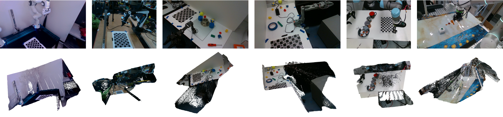
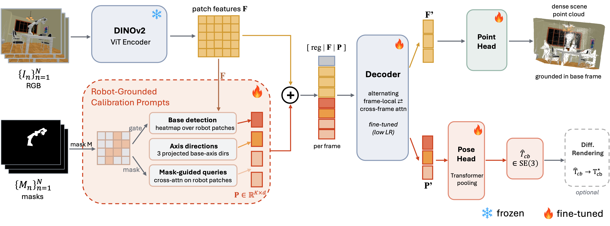
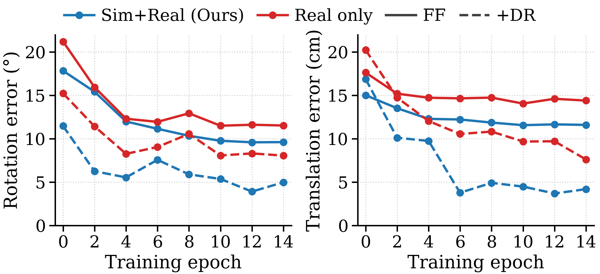
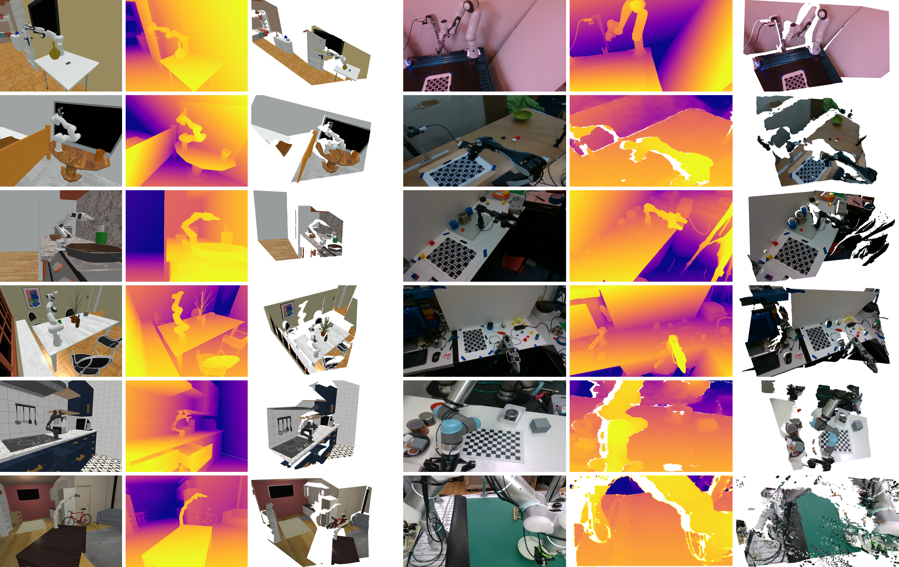

Base location
A base-location prompt captures where the robot base appears in the image.
Manuscript under review · Submitted to ICRA 2027
From RGB observations and robot masks to a shared camera–base transform and a dense 3D reconstruction, in a single forward pass.

Stationary eye-to-hand calibration estimates the rigid transform between a fixed camera and the robot base. Silhouette-based differentiable rendering can be highly accurate, but its non-convex objective makes the starting estimate critical.
SHEC3R learns that starting estimate. Robot-grounded prompts condition a pretrained visual-geometry backbone on the base location, projected base-axis directions, and the visible arm configuration. Cross-frame attention combines evidence from multiple observations into a shared calibration.
The feed-forward stage requires RGB frames and robot masks, without a calibration board, robot meshes, or joint readings. One depth frame recovers metric scale. The estimate can also initialize an optional differentiable-rendering stage, which additionally requires robot meshes and joint readings.
2 min 53 s · Download MP4 · Read the method overview
Three complementary prompts connect a visual-geometry prior to the robot base frame.

A base-location prompt captures where the robot base appears in the image.
Projected base-axis directions provide cues for the orientation of the robot frame.
Mask-guided arm prompts gather evidence from the visible robot across observations.
The neural initializer uses RGB + masks; metric scale uses one depth frame. Optional DR refinement additionally uses URDF meshes and joint readings.
Evaluation on the same scenes with a shared differentiable-rendering stage, varying only the initializer.
| Evaluation split | Initializer | S@5° ↑ | Final rotation ↓ |
|---|---|---|---|
| Simulation 400 scenes | EasyHeC | 25.2% | 80.5° |
| EasyHeC++ | 8.0% | 88.6° | |
| SHEC3R | 80.2% | 0.05° | |
| Real 86 scenes | EasyHeC++ | 15.1% | 80.7° |
| SHEC3R | 86.0% | 0.74° |
S@5° is the percentage of scenes with final rotation error below 5°. These are refined results, not feed-forward-only results. Figures reproduced from Table I of the manuscript.

The manuscript also evaluates an external platform: the Flexiv Rizon 4 subset of RH20T. On the combined real evaluation set of 647 scenes, SHEC3R reaches 90.3% S@5° after refinement. See the paper for split definitions and limitations.
Synthetic and real-world data across camera layouts, scenes, and robot morphologies.

Simulation. Franka Panda, xArm6, SO-100, and WidowX-AI, across eight scene types.
Physical capture. Franka, AIRBOT Play, SO-101, OpenManipulatorX, and UR5e, across nine environments.
@misc{shec3r2026,
title = {SHEC3R: A Robot-Grounded Neural Initializer
for Stationary Eye-to-Hand Calibration},
author = {Anonymous},
year = {2026},
note = {Manuscript under review}
}Author placeholder; update with the public preprint metadata before citing.